Pomada para Feridas MEBO
Nosso carro-chefe em medicina regenerativa tópica para queimaduras e feridas.
Pomada Tópica para Queimaduras e Feridas
A Pomada para Feridas MEBO é um medicamento tópico para o tratamento de queimaduras e feridas. Combina múltiplos ingredientes ativos de origem natural com uma forma farmacêutica patenteada.
A pomada proporciona um ambiente úmido fisiológico, liquefaz e remove tecidos necróticos, reduz a dor, previne e controla infecções, previne e minimiza a formação de cicatrizes e promove a regeneração da pele in situ.
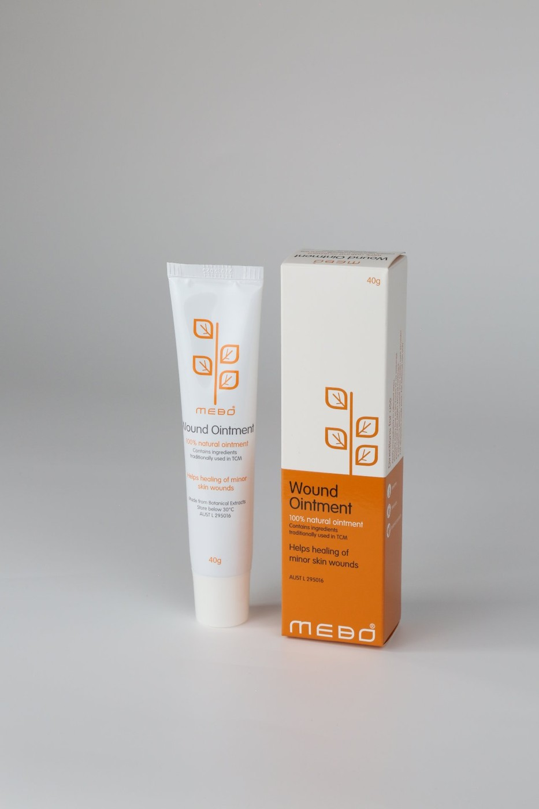
O Que Há Dentro
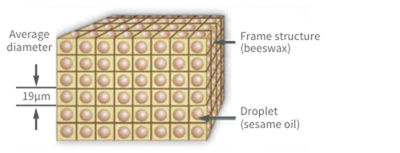
A Base: Uma Estrutura que Carrega os Ativos
A cera de abelha constrói uma estrutura semelhante a um favo de mel que mantém a fase oleosa no lugar, fazendo a pomada permanecer sobre a ferida e liberar os ativos de forma constante.
Microgotículas de óleo de gergelim carregam todos os constituintes ativos e ajudam a manter o ambiente úmido fisiológico de que a ferida precisa.
Constituintes Ativos — de Origem Botânica
Para Que É Usada
Queimaduras
Queimaduras de primeiro, segundo e terceiro graus — térmicas, químicas e elétricas.
Feridas Crônicas
Úlceras de pé diabético, úlceras por pressão, úlceras venosas e doenças de pele.
Feridas Traumáticas
Abrasões, lacerações e mordeduras de animais.
Feridas Cirúrgicas
Feridas de cirurgia geral e plástica, áreas receptoras e doadoras de enxertos.
O Ambiente Ideal para a Cicatrização
Sete ações complementares apoiam a ferida da proteção à regeneração.
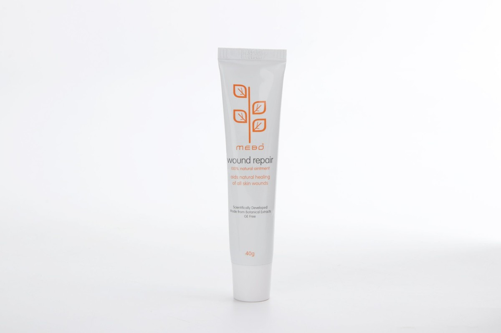
- 01Proporciona um ambiente úmido fisiológico
- 02Produz efeito analgésico
- 03Possui propriedades anti-inflamatórias
- 04Auxilia no desbridamento autolítico
- 05Previne e controla a infecção da ferida
- 06Previne e minimiza a formação de cicatrizes
- 07Promove a regeneração da pele in situ
A Medicina Regenerativa em Ação
Uma explicação animada de como a tecnologia da medicina regenerativa atua no nível celular.
Como Aplicar a MEBO
Três métodos de aplicação, escolhidos conforme o tipo e a condição da ferida. Limpe a ferida com cuidado — nunca use soluções estéreis ou antissépticos.
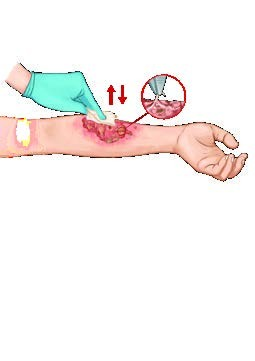
Remova com cuidado o tecido necrótico liquefeito e o exsudato com gaze ou pinça.
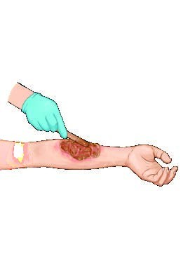
Cubra a ferida com uma camada de ~1 mm de MEBO.
Não use soluções estéreis nem antissépticos para limpar a ferida.
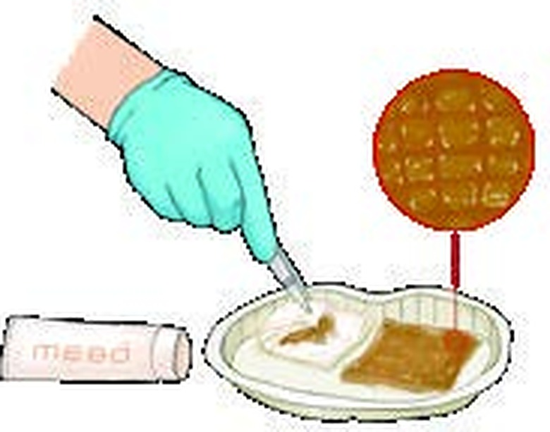
Misture a gaze estéril com MEBO até ficar totalmente impregnada.
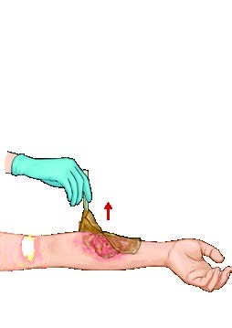
Levante com cuidado a gaze usada da ferida.
Remova o tecido necrótico liquefeito e o exsudato.
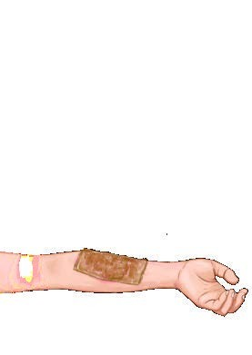
Aplique 1–2 mm de MEBO e cubra com 1–2 camadas de gaze impregnada.
Não use soluções estéreis nem antissépticos para limpar a ferida.
Misture a gaze estéril com MEBO até ficar totalmente impregnada.
Levante com cuidado a gaze usada da ferida.
Remova o tecido necrótico liquefeito e o exsudato.
Cubra a ferida com 2–3 mm de MEBO.
Aplique 2–4 camadas de gaze impregnada com MEBO.
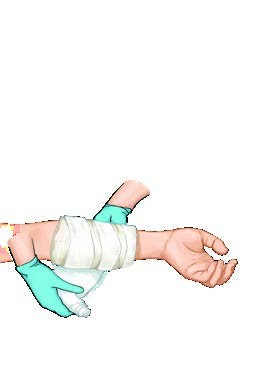
Adicione um algodão de 1–3 cm e faça um curativo com leve pressão.
Não use soluções estéreis nem antissépticos para limpar a ferida.
Mais da MEBO
Além da nossa pomada carro-chefe, a MEBO estende a ciência regenerativa a cinco categorias de produtos.
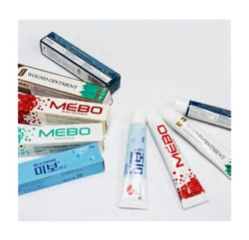
Carro-chefeMedicamento
- Moist Exposed Burn Ointment
- Pomada para Feridas MEBO
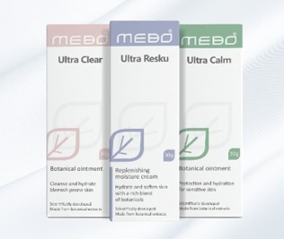
Cuidados com a Pele
- Anticicatriz
- Antiprurido
- Antiacne
Saúde
- Cápsulas GI Regenerate
- Sugar Balance
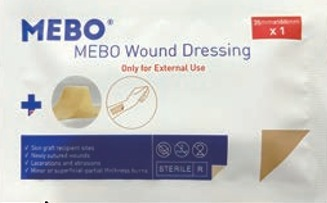
Dispositivos Médicos
- Curativo para Feridas
- Adesivo Refrescante
- Adesivo Frio e Quente
- Esponja
- Curativo para Cicatrizes
Cosméticos
- Série de Rejuvenescimento da Pele
Precisa de Mais Informações?
Acesse recursos profissionais, dados clínicos completos e documentação técnica para profissionais de saúde.